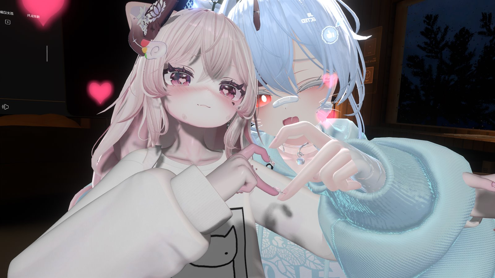
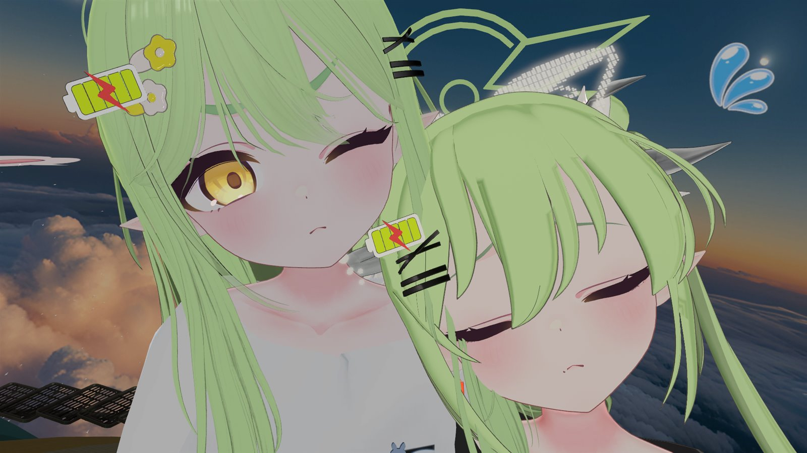

PRIVATE TRANSMISSIONLAT 31.2304 / LON 121.4737
VISUAL MEMORY ARCHIVE9 SIGNALS DETECTED
THE OBSERVATORY IS OPEN FOR YOU
NOTHING HERE
WAS ACCIDENTAL.
这些画面没有消失。
它们只是一直在等你重新靠近。
DRAG / SCROLL TO NAVIGATE
WE KEPT
GOING.
↔
拖动这片记忆。
速度越快，时间越不稳定。
WE WERE HERE — WE WERE HERE — WE WERE HERE — WE WERE HERE —
按住并拖动灯具
照亮三段记录
照亮三段记录
07.29 / 雨还在下


LAST STOP七凉 / 07.29
七凉，生日快乐喵
咕咕嘎嘎 · 2005.07.29